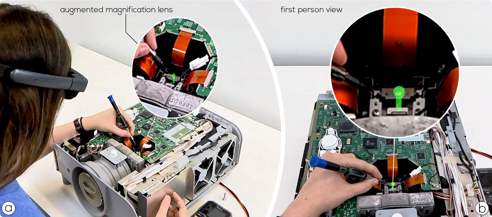

Magnification Lenses for Small-Scale Augmented Reality Instructions
Conference paper at IEEE ISMAR 2026

Teaser Video
Abstract
Small-scale objects that are difficult to see or distinguish from their surroundings are common in many assembly and maintenance procedures. Augmented reality (AR) instructions involving such small parts may be difficult to perceive, potentially causing misinterpretations. This paper explores the use of AR visualizations for small-scale instructions. In particular, we present the design and evaluation of AR magnification visualizations. Through iterative design, we explore how magnified AR views impact user behavior, visual attention, and subjective perception in the context of AR instructions. Our results demonstrate the effectiveness of live AR magnification in improving task guidance, providing a strong foundation for future work on AR-assisted instruction and precision interaction design.
Browser demo
Citation
@proceedings{ribeiroskreinig2026Magnification,
author={Skreinig, Lucchas Ribeiro and Kalkofen, Denis and Ritter, David Mohr, Peter and Tatzgern, Markus and Schmalstieg, Dieter and Stanescu, Ana},
title={Magnification Lenses for Small-Scale Augmented Reality Instructions},
booktitle={IEEE Int. Symp. on Mixed and Augmented Reality (ISMAR)},
doi={10.1109/ISMAR70079.2026.00049}
}